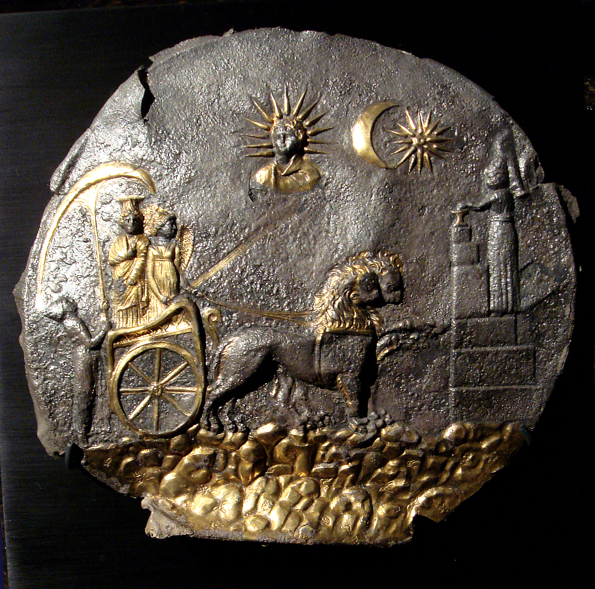

Ai-Khanoum is the archaeological site of a Hellenistic city in Takhar Province, Afghanistan. It was probably established in the early 3rd century BC by a monarch of the Seleucid Empire at the confluence of the Oxus and Kokcha rivers, controlling access to valuable mines and strategic choke points. Ai-Khanoum, which became a major centre of the Greco-Bactrian Kingdom after it seceded under the Diodotid dynasty, was redesigned by King Eucratides I to be an imperial capital, with a huge palace, religious structures, and massive defences. Nevertheless, it was sacked at the end of his reign (c. 145 BC) by the nomadic Saka and Yuezhi peoples, and the city was soon abandoned. Rediscovered two millennia later by the King of Afghanistan in 1961, Ai-Khanoum was excavated by a team of French archaeologists until the Saur Revolution in 1978. During the subsequent conflicts in Afghanistan, the site was extensively looted. Here you can read:Full Article